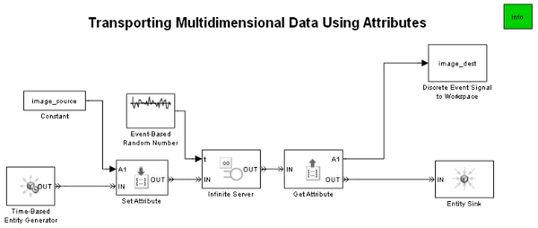

Transporting Multidimensional Data Using Attributes
Contents
Overview
This model demonstrates that an entity can carry multidimensional data from block to block using an attribute.
Working
When you open the model, it loads a three-dimensional array, image_source, into the MATLAB® workspace. When you run the simulation, the Set Attribute block assigns an attribute to the arriving entity. The value of the attribute is the entire multidimensional array. The Get Attribute block reads the array from the attribute of the arriving entity and writes the array to the A1 signal output port. The Discrete Event Signal to Workspace block creates a corresponding structure, image_dest, in the MATLAB workspace. When the simulation ends, the imageview function uses the image_dest structure to plot the image that the array represents.